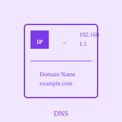

Domain Name & DNS

A Domain Name is an alphanumeric representation of an IP address, designed to be more memorable and user-friendly than the numerical format. For example, instead of remembering and typing the numeric IP address 142.251.41.4 to access Facebook, you can simply type facebook.com. Domain names follow a hierarchical structure, with the top-level domain (TLD) at the end, such as .com, .org, .edu, or .gov, followed by the domain name itself. This naming system makes the Internet much more accessible and usable for everyday people.
DNS (Domain Name System) is the hierarchical naming system that translates human-readable domain names into their corresponding IP addresses. When you type a URL into your browser, the DNS system performs a lookup to convert the domain name to the appropriate IP address so your computer can locate and communicate with the correct server. The DNS operates as a distributed database of millions of name servers around the world, working together to maintain and resolve domain names. This decentralized approach ensures reliability, redundancy, and fast performance across the globe.
The DNS resolution process involves multiple steps and different types of servers. When you enter a domain name, your computer first queries a recursive resolver, typically provided by your ISP or a public service like Google DNS. The recursive resolver then queries root nameservers, which direct it to the appropriate top-level domain (TLD) nameserver, which in turn directs it to the authoritative nameserver for the specific domain. Finally, the authoritative nameserver returns the IP address associated with the domain name. This elegant system has become critical infrastructure for the modern Internet, handling billions of queries daily and enabling the seamless web experience we depend on.